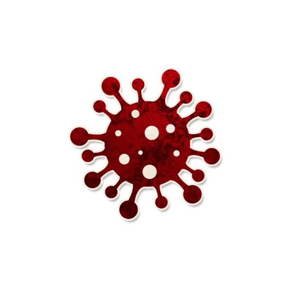

背景故事
“我可以和你们共进晚餐吗，我想吃那个煎饼馃子”
角色能力
信源
Each night, choose a player to infect. Infected who nominate die & infect the nominee. After day 4, evil wins.
在你的首个夜晚，三名除你以外的玩家被感染。每个夜晚*，你要选择一名玩家：他被感染。如果被感染的玩家发起提名，他死亡并感染被提名者。在你的第四个白天结束时，邪恶阵营获胜。
角色简介
活体病毒杀死发起提名的玩家，但是可能自食恶果。
在活体病毒的首个夜晚，会有三名玩家被感染。
被感染的玩家发起提名会死亡，随后感染被提名的玩家。
在第四天结束后，邪恶阵营获胜。如果这时活体病毒中毒或醉酒，那么在他解除醉酒中毒后宣布邪恶获胜。
范例
小石是活体病毒，在其首个夜晚分别让小喧 小天 小枫被感染了，第二天没有人发起提名，也没有人被活体病毒杀死。
在第四个白天，所有能提名的好人都被活体病毒杀死了，但是仅剩包括镇长在内的三名玩家存活，于是善良阵营获胜了。
运作方式
在首个夜晚，为除活体病毒外的三名玩家放置“感染”角色标记。
在除首个夜晚外的每个夜晚，唤醒活体病毒让他指向一名玩家，为他放置“感染”角色标记，随后让他重新入睡。
在提名阶段，如果一名被感染的玩家发起提名，将他的生命标记替换为死亡。随后在被他提名的玩家身边放置“感染”角色标记。
提示标记
- 感染
规则细节
与特定角色互动
士兵：士兵不会被活体病毒的选择感染，但是如果他被非活体病毒玩家提名，他就会被感染。但是即使他被感染也不会死于提名。
报丧女妖：如果报丧女妖因感染而死，那么所有人会立刻得知她是报丧女妖，况且她的每次提名都可以感染一名玩家。
魔像：如果魔像被感染后发起提名，你可以让他杀死被他提名的玩家后死亡，或是在他杀死被他提名的玩家前死亡，这是由说书人决定的。
女巫：如果女巫选择的玩家同时被感染了，那么由说书人决定他是被女巫还是活体病毒杀死的。但无论如何都会让被他提名的玩家被感染。
水手&弄臣&茶艺师：如果不会死亡的玩家被感染且发起了提名，说书人不会宣布他死亡，但是他确实经历了一次死亡。
相克规则
活体病毒&僧侣：被僧侣保护的玩家会解除感染状态。
活体病毒&旅店老板：被旅店老板保护的玩家在第二天白天不会因为被感染后发起提名而死亡。
活体病毒&镇长：如果活体病毒选择了镇长，那么可能会有一名玩家代替他被感染。
活体病毒&守鸦人：如果守鸦人因感染而提名死亡，他会在当晚被唤醒使用自己的能力。
活体病毒&农夫：如果农夫因感染而提名死亡，他会在当晚让一名善良玩家变为农夫。
Json字段
图标画师
暂无图标